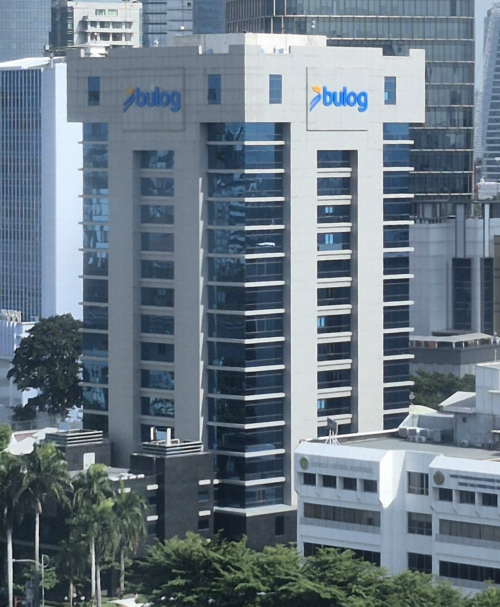
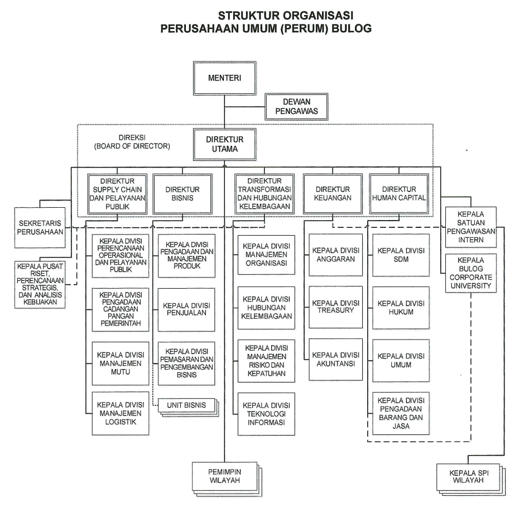

Beberapa Wilayah Kerja
Jaringan Wilayah Kerja Perum BULOG di Berbagai Daerah
NANGGROE ACEH DARUSSALAM
Jalan Tengku H.M. Daud Beureueh Banda Aceh.
Telp. 0651-23920
Fax. 0651-32716
Email : divre_nad@bulog.co.id
SUMATERA UTARA
Jalan Jend. Gatot Subroto No. 180 Medan
Telp. 061-8451361
Fax. 061-8452465, 8460750
Email : divre_sumut@bulog.co.id
SUMATERA BARAT
Jalan H.M. Thamrin No. 24 Padang Sumbar
Telp. 0751-31973, 24566, 24583
Fax. 0751-31978
Email : divre_sumbar@bulog.co.id
RIAU & KEPRI
Jalan Cut Nyak Dien No. 24 Pekanbaru
Telp. 0761-23680, 23062, 47477, 47466
Fax. 0761-33234
Email : divre_riau@bulog.co.id
JAMBI
Jalan R.DP. Kolopaking No. 40 Telanapura Jambi
Telp. 0741-60602-62637
Fax. 0741-62423
Email : divre_jambi@bulog.co.id
SUMATERA SELATAN & BABEL
Jalan Perintis Kemerdekaan No. 1 Palembang 30114
Telp. 0711-712246, 713122
Fax. 0711-713228
Email : divre_sumsel@bulog.co.id
Lokasi Perusahaan Utama
Jl. Gatot Subroto No. Kav 49, RT.5/RW.4, Kuningan Timur, Kec. Setiabudi, Kota Jakarta Selatan, DKI Jakarta 12950
Tata Kelola Manajemen Terintegrasi
PT Perum BULOG
Struktur tata kelola disusun secara komprehensif untuk memastikan efisiensi distribusi logistik pangan nasional.
Bagan Struktur Organisasi

Produk
Berbagai Produk Pangan Berkualitas Unggulan Persembahan Perum BULOG

Befood Setra Ramos
Beras premium pilihan dengan bulir panjang, aroma khas yang segar, serta tekstur pulen alami untuk hidangan keluarga sehat.

Befood Slyp Super
Beras kualitas super yang diproses dengan teknologi modern untuk memberikan hasil nasi yang putih bersih dan kenyal.

Befood Pandan Wangi
Beras varietas unggulan dengan aroma pandan alami yang harum khas Cianjur dan tekstur nasi yang sangat lembut.

Befood Rojolele
Beras tradisional kualitas khusus khas Indonesia dengan cita rasa gurih, cita rasa otentik, dan kualitas kepulenan tinggi.

Befood Tepung Beras
Tepung beras murni berkualitas tinggi, cocok sebagai bahan olahan kue tradisional, adonan peyek, maupun masakan harian.
Caping Emas
Rangkaian varian beras spesial penunjang gaya hidup sehat, seperti beras merah dan beras hitam kaya nutrisi serta serat.

Lereng Ijen
Beras organik premium pilihan yang ditanam di kawasan vulkanik fertile Lereng Ijen, kaya akan mineral dan bebas bahan kimia.
Al-Hambra
Beras khusus khas untuk sajian kuliner Timur Tengah seperti nasi Kebuli, Biryani, dan Mandhi dengan bulir ekstra panjang.

Beras Kita
Beras putih premium andalan BULOG yang higienis, bebas pemutih, dan aman dikonsumsi oleh seluruh anggota keluarga.

Terigu Kita
Tepung terigu berkualitas serbaguna untuk kebutuhan gorengan, roti, hingga aneka olahan aneka kuliner harian.

Gula ManisKita
Gula kristal putih murni yang diproduksi dari tebu pilihan, menghasilkan rasa manis alami yang bersih dan higienis.
Minyak Goreng Kita
Minyak goreng kelapa sawit jernih berfortifikasi Vitamin A yang membantu menghasilkan masakan renyah dan sehat.